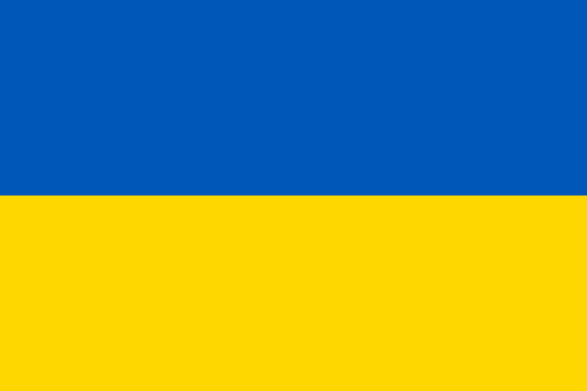

Solitetsprosjekt -
GAND 1IMA
Hjemmeside
Ukraina - Russland Historisk Tidslinje
Minsk-avtalene
Russland-Ukraina Tidslinje
1991:
Sovjetunionens sammenbrudd
Desember 1991:
Sovjetunionen kollapser, og Ukraina erklærer sin uavhengighet.
2004: Oransjerevolusjonen
November 2004:
Massive protester bryter ut etter det kontroversielle presidentvalget.
Desember 2004:
Viktor Jusjtsjenko blir erklært vinner etter omvalg, og Oransjerevolusjonen fører til en politisk omveltning.
2006 og 2009:
Gasskonflikter
Januar 2006:
Russland stenger gassforsyningen til Ukraina på grunn av en uenighet om priser og gjeld.
Januar 2009:
Gasskonflikten gjentar seg, og Russland kutter gassforsyningen til Ukraina igjen.
2010-2013:
Europakortet og økende spenning
November 2013:
Ukraina vurderer å inngå en samarbeidsavtale med EU.
November 2013:
President Viktor Janukovytsj avstår fra å signere avtalen etter press fra Russland.
Februar 2014:
Politisk uro og flyktning
Februar 2014:
Viktor Janukovytsj flykter fra Ukraina etter økende protester.
Februar 2014:
Ukraina danner en overgangsregjering.
Mars 2014:
Annektering av Krim
Mars 2014:
Russland annekterer Krim-halvøya etter en folkeavstemning som blir kritisert for å mangle internasjonal legitimitet.
April 2014:
Protester i Øst-Ukraina
April 2014:
Pro-russiske demonstrasjoner og okkupasjon av offentlige bygninger i Øst-Ukraina, spesielt i Donetsk og Luhansk.
Mai 2014:
Uavhengighetsreferendum i Øst-Ukraina
Juni 2014:
Pro-russiske separatister i Donetsk og Luhansk gjennomfører folkeavstemninger om uavhengighet, som ikke blir anerkjent internasjonalt.
Juni 2014:
Vold eskalerer
Juni 2014:
Kampene mellom ukrainske regjeringsstyrker og separatister i Øst-Ukraina eskalerer.
2014-2015:
Minsk-avtalene
September 2014:
Minsk I-avtalen inngås, med mål om å etablere en våpenhvile og politisk løsning.
Februar 2015:
Minsk II-avtalen følger opp, men begge avtalene blir gjentatte ganger brutt.
2015-d.d.:
Fortsettende kamper og spenninger Perioder med våpenhvile og brudd på Minsk-avtalene.
Diplomatiske og økonomiske spenninger mellom Russland og Ukraina, samt vestlige land. Ukraina mottar støtte fra vestlige land, og sanksjoner mot Russland opprettholdes.